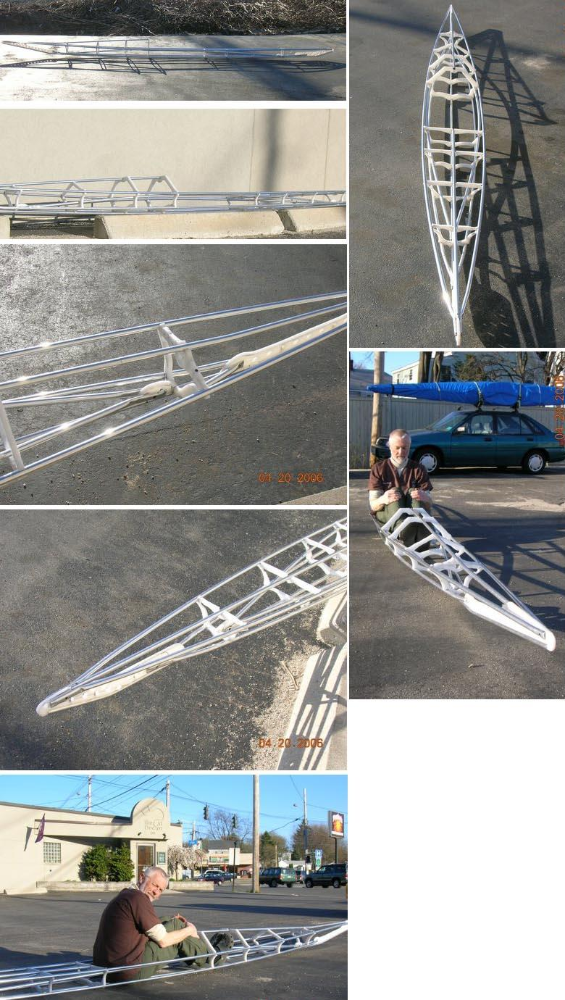

| Bob Wright - "Arched" Inwales ( 5 of 5 ) | Menu Last Page Next Page |
|
 Bob Wright of Portland, Maine displays his modified "Sea Rover" frame with it's arched inwales. Bob was able to connect both section 4 and 5 inwales at the normal postion, whereas the Sea Rider, due to a different cross section shape and size, required an alternate inwale mounting position on cross section 4. |
|